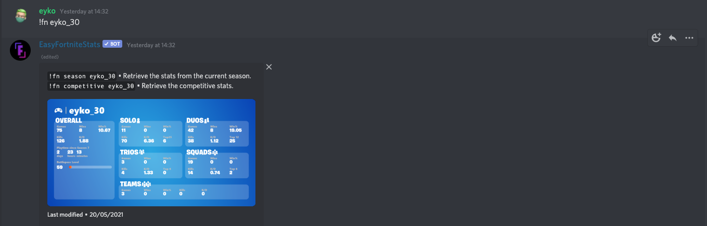

first you have to add the bot using top.gg in the search bar right EasyFortniteStats

Then you add the invite button
when u go to the invite select a sever and press the authorization button

and do the human verification after that the bot will be added to ur sever
and make a text channel named bots or fortnite status
then what you want to do is put wright this command !fn(your user name here) look at the pic if u dont get it
 click on me